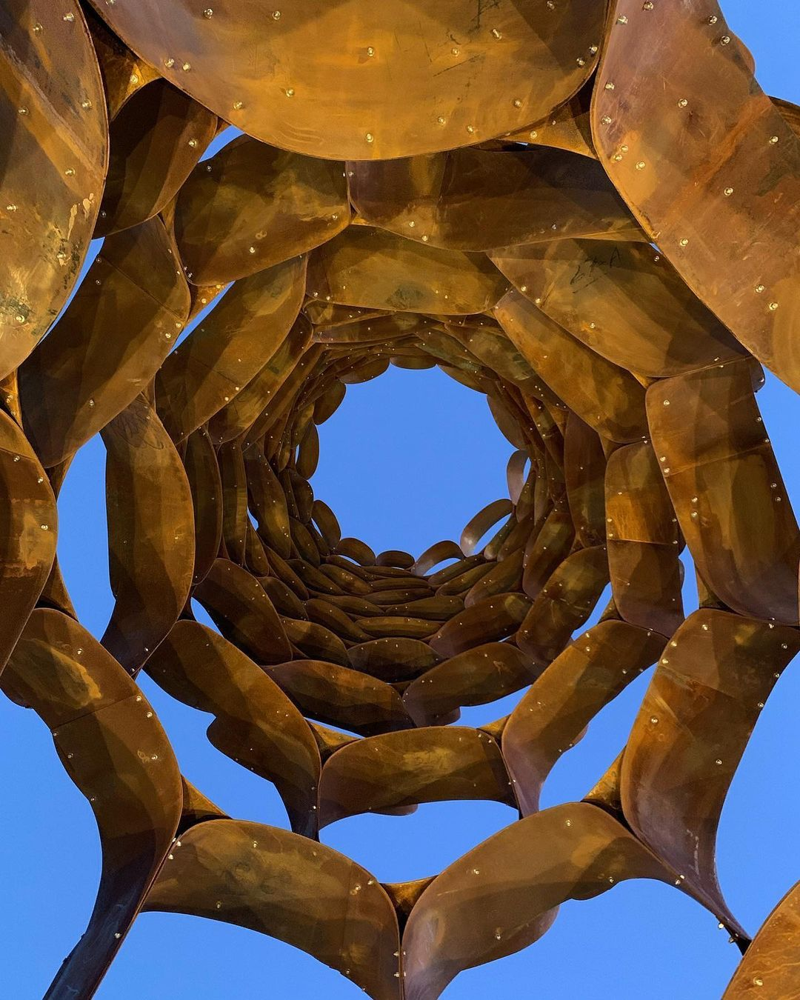
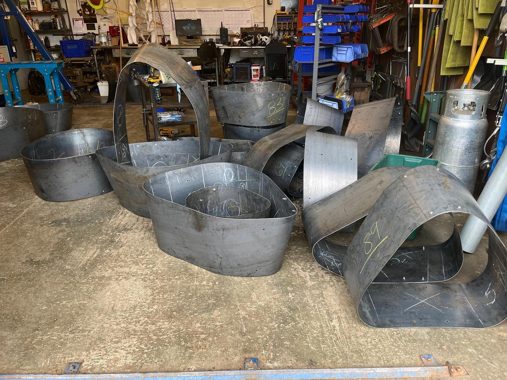
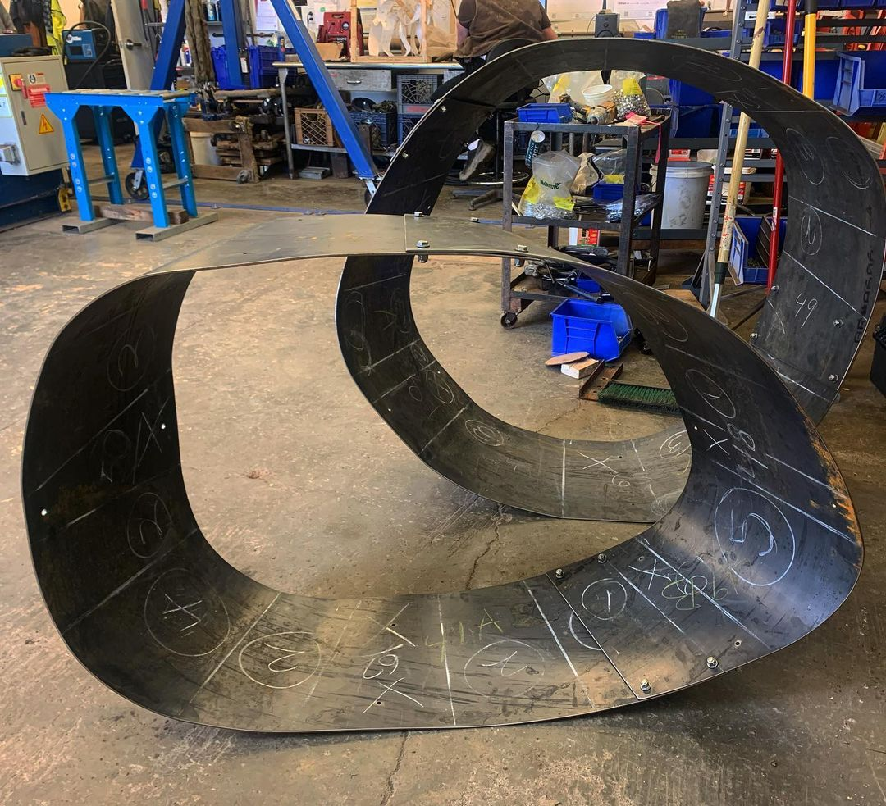
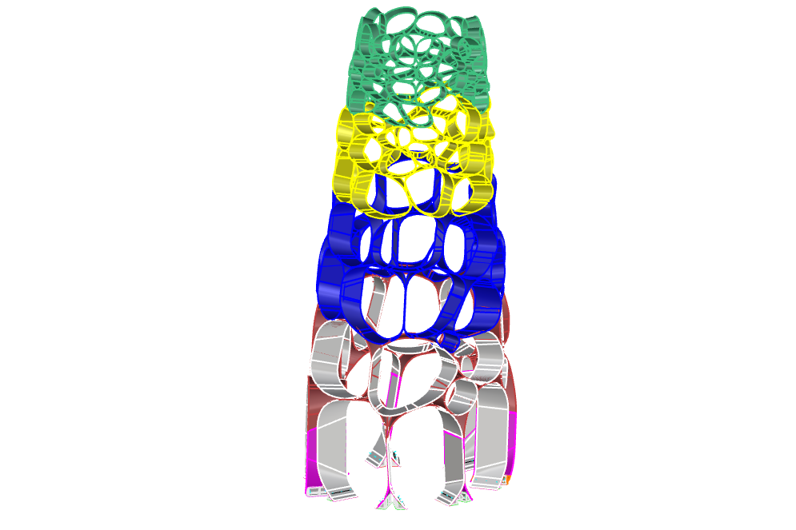
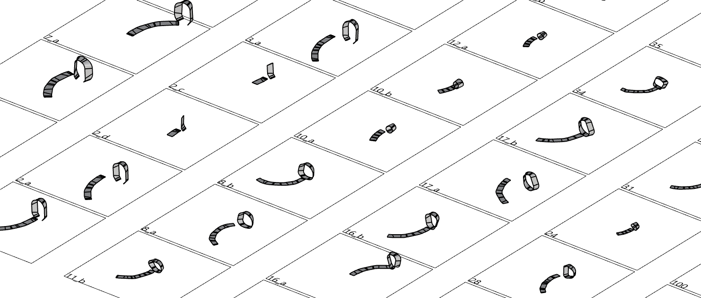
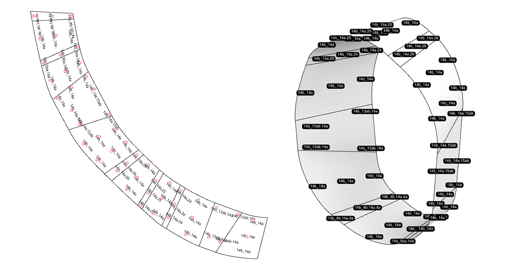

Beken Sculpture
image © Richard Bangert
Public art in Alameda, California
Design
Artist
Dewitt Godfrey
My Role
Computational Designer @ AKT II
For this project I did parts of the computational form finding, but primarily the fabrication geometry. This included bolt layouts, labeling and unrolling to produce the final geometry to be constructed
AKT II Team
Jeg Dudley
Year
2021
Status
Built in 2022
One of many collaborations I worked on with artist Dewitt Godfrey. The sculpture in Alameda was his tallest to date and involved complexity in the curvature of the rolled steel due to the narrow base shape.

image © Dewitt Godfrey

image © Dewitt Godfrey

image © Dewitt Godfrey
The hoop geometries was packed on a 3d surface using the techniques developed between AKT II and DeWitt Godfrey over a number of years. This process is reflected on in the following paper co-authored between myself, Jeg Dudley and the artist. To generate the fabrication geometry an automated process is setup which include detailed labeling of every single hoop and bolt, as the geometries themselves will act as the construction information, each bolt is labeled with all the sheets it connects to.


